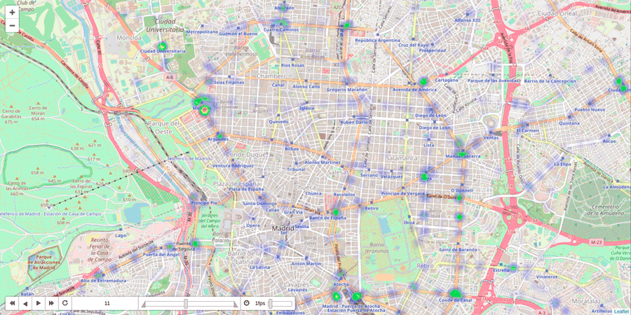
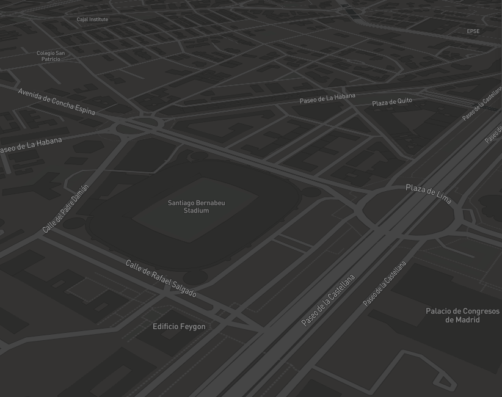

5.00 am
Madrid despierta

Madrid se despertaba el 20 de septiembre como cualquier día. A las 5:00 de la mañana, Instagram se llenaba de usuarios compartiendo fotografías de sus desayunos. Horas después, el Sol alumbraba la calle y poco a poco, el centro de la ciudad se llenaba de actividad.
Publicaciones geolocalizadas en Twitter e Instagram. 20 septiembre 2017

Los coches circulaban por las arterias de la M40 y la M30 y emitían compuestos como óxidos de nitrógeno. Sin embargo, estos gases no podían escapar de la ciudad. A lo lejos se veía a todos los contaminantes juntos alimentando una boina gris sobre la ciudad.
En las redes sociales, dejar de respirar contaminación no encabezaba la agenda del día. Había asuntos más inmediatos. La Puerta del Sol acogería un encontronazo entre centenares de #MadridPorelReferendum y proclamas de “Viva España”. El Santiago Bernabeu se preparaba para acoger otro enfrentamiento entre dos ciudades: el Real Madrid y el Real Betis. El Palacio de los Deportes (llamado temporalmente WiZink Center) se engalanaba para una cita más tranquila, pero con sabor a polémica: el concierto de Maluma.
El tráfico se intensificaba en el centro de la ciudad. Datóxido Nitrógeno, un bot de Twitter que se encarga de actualizar datos de contaminación, comunicó por la tarde: “2 estaciones han superado el límite saludable de #contaminación por NO2 en Madrid. Perjudicial exposición prolongada en los alrededores”. Al final del día, cinco estaciones más lo superarían. La alarma se perdió entre el ruido de las publicaciones. En Instagram no se conoció.
🕛‼ 2 estaciones han superado el límite saludable de #contaminación por NO2 en Madrid.
— Datóxido Nitrógeno (@datoxnitro_bot) 20 de septiembre de 2017
Perjudicial exposición prolongada en los alrededores: pic.twitter.com/hd9GybBXYG
12.00 am
Madrid respira NO2
Aunque no es el único contaminante que compone la boina de Madrid, el dióxido de nitrógeno (NO2) resulta uno de los más difíciles de sortear. Procedente de la quema de costumbres fósiles, sale de las chimeneas de las viviendas, las industrias y, sobre todo, de las emisiones de los tubos de escape.

Gráfico interactivo de la intensidad del tráfico en el día señalado en Madrid
Xavier Querol, geólogo e investigador especializado en contaminación atmosférica, destaca un factor de peso en la emisión de NO2 en ciudades como Madrid y Barcelona: la presencia de centrales térmicas. A pesar de ello, es el del tráfico rodado el que al final respiran los ciudadanos.
La capital española, rodeada al noroeste por la Sierra de Guadarrama, se encuentra en un territorio donde son frecuentes los anticiclones. Ante una inversión térmica, el aire más cálido no deja que el aire frío suba. Dentro se queda la contaminación. “El efecto es como la una tapa de una olla. Tú estás hirviendo el agua y salen humos. En el momento en el que la pones, la concentración es mayor”, representa Querol.

Según la Organización Mundial de la Salud, la exposición a partículas en suspensión (como el humo o el hollín) y compuestos como el NO2 o el dióxido de azufre (SO2) conlleva graves riesgos sanitarios. En su informe de 2012 expuso que el dióxido de nitrógeno y el dióxido de azufre pueden tener influencia en el asma, los síntomas bronquiales, las alveolitis y la insuficiencia respiratoria.
El ozono es un importante factor de mortalidad y morbilidad por asma y, según Querol, una de las grandes razones para abordar el problema de la emisión de NO2, ya que al entrar en contacto con la atmósfera contribuye a su formación.
Según estimó entonces la OMS, la contaminación atmosférica en las ciudades y zonas rurales de todo el mundo acaba de manera prematura con 3 millones de personas. Este hecho se debe a que agrava enfermedades cardiovasculares y respiratorias ya existentes. De esta cifra, un 87% procede de países con ingresos bajos y medianos, situados sobre todo al oeste del Pacífico y al suroeste de Asia.
20.00 am El problema del diésel
“Estamos hablando de un problema de salud pública. Estamos infringiendo una legislación superando unos valores límites y tenemos que actuar. Entonces, ¿Las medidas que se están llevando son suficientes?”, se pregunta Querol.
Por la tarde, las mayores concentraciones de personas se encontraban en torno al Santiago Bernabeu,
la Puerta del Sol y, más tarde, el WiZink Center. Aunque, según las cifras de la EMT,
se produjo un notable aumento de pasajeros en líneas relacionadas a esas horas, la M40 y la M30
seguían registrando altas cifras de tráfico.

Densidad de usuarios en la red de autobuses de la EMT a las 11:00 am. Fuente: EMT
En la estación de medición de calidad del aire de Ramón y Cajal, a apenas unos pasos del Santiago Bernabeu, el NO2 superó los límites establecidos por Europa.

En el #Bernabéu #RealMadridRealBetis #LaLiga 🏆🇪🇸⚽️ cobertura para @cracks_oficial 🎥💻🎙 pic.twitter.com/YFpHGKWquM
— Nicolás Gómez Sañudo (@NicoGomez7) 20 de septiembre de 2017
La implementación del uso de bicicletas por la ciudad regulación del aparcamiento con criterios de calidad del aire forman parte de las treinta medidas con la capital pretende desprenderse de su ya característica boina. La número 16 detalla: “Restricciones de entrada al Área central en función de la tecnología de los vehículos y horarios extendidos para los vehículos menos contaminantes dedicados a la distribución urbana de mercancías”.
Según explica Querol, los coches son menos contaminantes que hace años, pero el NO2 que emiten los coches diésel apenas ha cambiado desde los años noventa. Destaca los casos de Noruega y Holanda, donde los países con mayores números de coches eléctricos o el de Milán, donde los coches más antiguos de 2005 no entran en el centro de la ciudad. “Necesitamos soluciones rápidas”, insiste.
“En España ha mejorado la calidad del aire, muchísimo. Pero todavía tenemos el concepto de que el coche es un símbolo de estatus social, muy alto si es de alta gama. No deberíamos usar el coche propio más que cuando sea 100% necesario”, manifiesta Querol. No cree que ciudades como Madrid, París, Barcelona o Londres cumplan con sus objetivos a partir de 2020.
Al llegar la noche, el alto volumen de tráfico descendía en el centro de la ciudad. Las últimas fotografías del concierto de Maluma aparecían en Instagram y la boina se había teñido de un brillo rojizo. Madrid se preparaba para otra jornada de desplazamientos a lo largo y ancho de la capital. Y despertar con el mismo problema: seguir respirando un problema de la movilidad.